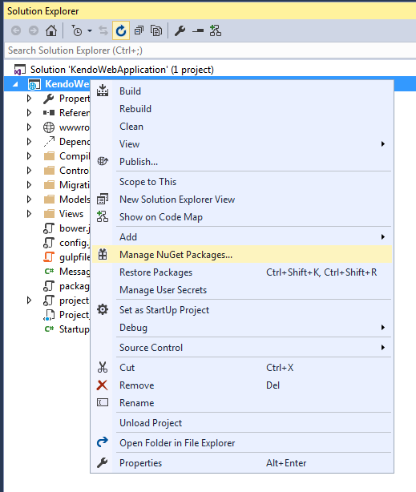
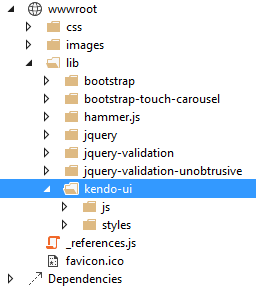
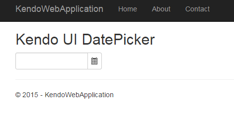

Using Telerik UI for ASP.NET MVC in MVC 6 applications
This tutorial shows how to configure an ASP.NET MVC6 project to use Telerik UI for ASP.NET MVC.
The tutorial uses Visual Studio 2015 RC.
1. Create an ASP.NET MVC 6 Web Site
Please skip this step if you're configuring an existing project.
- Select
File -> New Project - Choose
Templates / Visual C# / Web / ASP.NET Web Application - Set a name and location for the project
- From the project templates select
ASP.NET 5 Preview Templates / Web Site - Hit OK to create the project.
2. Add NuGet package
-
Open the NuGet Package Manager

- Choose
nuget.orgas a package source and search forKendo.Mvc -
Install the
Kendo.Mvcpackage version 2015.2.602 or later. This should add a similar line in yourproject.json:"dependencies": { ... "Kendo.Mvc": "2015.2.602" } -
Open
Startup.csand locate theConfigureServicesmethod. Add the following snippet:// Register UI for ASP.NET MVC helpers services.AddKendo(); -
Import the
Kendo.Mvc.UInamespace in~/Views/_GlobalImport.cshtml@using Kendo.Mvc.UI -
Copy the Kendo UI client-side resources
-
Manual installation
Copy the
jsandstylesfolders from thetelerik.ui.for.aspnetmvcarchive towwwroot\kendo-ui
-
Install Kendo UI as a Bower package
After installing the Bower package edit the
gulpfile.jsto copy the resources towwwroot\libon build.gulp.task("copy", ["clean"], function () { var bower = { ... "kendo-ui": "kendo-ui/{styles,js}/**/*" }; ... });
-
-
Register the Kendo UI styles and scripts in
~/Views/Shared/Layout.cshtml... <link rel="stylesheet" href="~/lib/kendo-ui/styles/kendo.common-bootstrap.min.css" /> <link rel="stylesheet" href="~/lib/kendo-ui/styles/kendo.bootstrap.min.css" /> <link rel="stylesheet" href="~/lib/kendo-ui/styles/kendo.dataviz.bootstrap.min.css" /> ... <script src="~/lib/kendo-ui/js/kendo.all.min.js"></script> <script src="~/lib/kendo-ui/js/kendo.aspnetmvc.min.js"></script> @RenderSection("scripts", required: false) -
Use a Kendo UI Widget
Add the following snippet to
~/Views/Home/Index.cshtml<h2>Kendo UI DatePicker</h2> @(Html.Kendo().DatePicker() .Name("datepicker") .Deferred() ) @section scripts { @Html.Kendo().DeferredScripts() } -
All done
